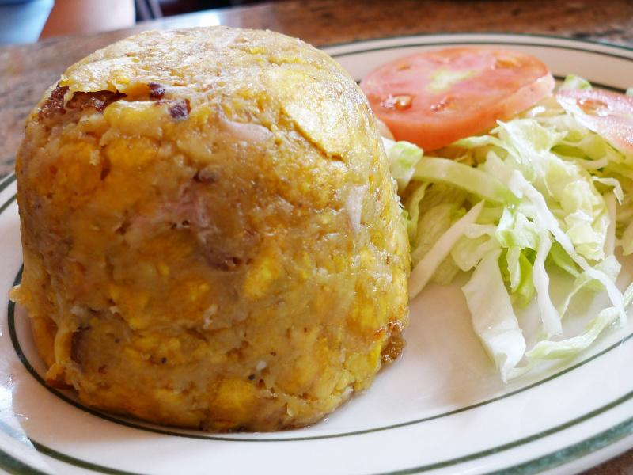

Mofongo

Mofongo, a dish of garlicky mashed plantains, is one of the most popular dishes in Puerto Rico.
It has clear roots in the fufu of West Africa. The classic way to serve mofongo is in the mortar (pilón)
in which it was mashed.
In the last several decades, mofongo has been adopted by Dominicans and is now commonly found
in Dominican restaurants and cookbooks.
Ingredients
- 4 Green plantains, peeled and cut into rounds on the diagona
- 3 tablespoons Olive oil
- 3 to 5 cloves Garlic, minced
- 1 cup Pork cracklings (chicharrones)
- Salt
Steps
- Soak the plantain pieces in a bowl of salted water for 15 to 30 minutes.
Drain well and pat dry.
- Heat the oil in a saute pan or skillet over medium flame.
Working in batches, saute the plantain slices until they are cooked through
but not yet browned, 10 to 12 minutes.
- Add the plantains, garlic and a little bit of olive oil to a large mortar or
bowl and mash with a pestle or potato masher until fairly smooth.
Alternatively, pulse with a food processor. Stir in the pork cracklings and salt to taste.
- Using moistened hands, form into 3-inch balls or mound on a plate and serve warm.
Return to Main Page